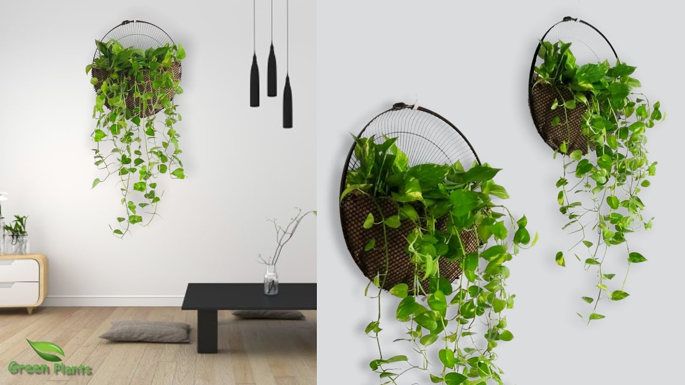
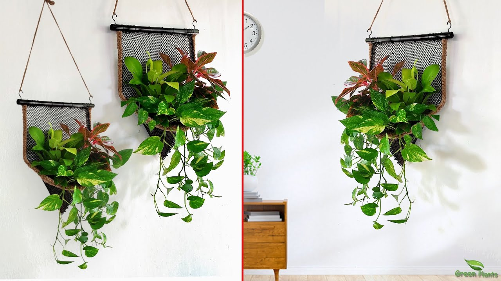
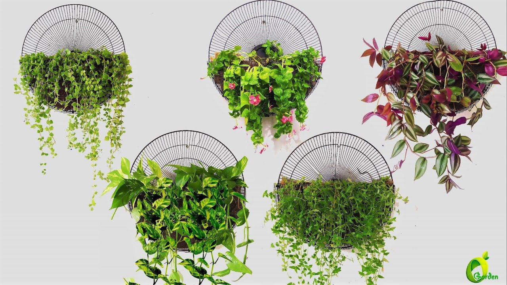
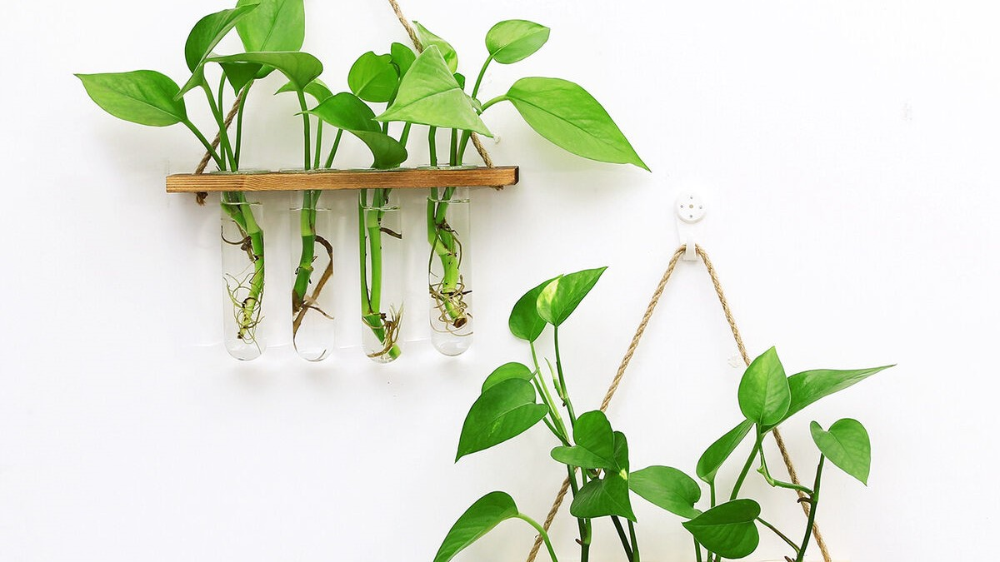

Wall-mounted plants are a popular choice for adding greenery and a touch of nature to indoor spaces where floor space may be limited. These plants are specifically designed to be mounted on walls and can be a great way to enhance the aesthetics of your home or office. Here are some details about wall-mounted plants:
1.Types of Wall-Mounted Plants: There are various types of plants that can be mounted on walls, including: Epiphytic Plants: These plants naturally grow on other plants or structures and are well-suited for wall mounting. Examples include air plants (Tillandsia) and certain species of ferns. One popular example is air plants (Tillandsia), which have unique and often intricate shapes. Air plants require minimal care and can be attached directly to the wall or mounted on decorative structures.
2. Succulents: Succulent plants are known for their fleshy leaves, stems, or roots that store water, allowing them to survive in arid conditions. Many succulents have shallow root systems, making them suitable for wall mounting. They come in various shapes, colors, and sizes, offering a wide range of options for creating a visually appealing display. Common succulent choices for wall mounting include different types of sedums, echeverias, and string-of-pearls (Senecio rowleyanus).
Mosses: Mosses are non-vascular plants that thrive in moist environments. They can be used to create living walls or green backdrops on walls. Mosses are adaptable and can grow well in low-light conditions, making them suitable for indoor spaces. They require regular misting or watering to maintain their moisture levels.
Mosses are adaptable and can grow well in low-light conditions, making them suitable for indoor spaces. They require regular misting or watering to maintain their moisture levels.
Herbaceous Plants: Certain herbaceous plants can be trained to grow vertically on walls. Ivy (Hedera spp.) and creeping fig (Ficus pumila) are popular choices due to their climbing and trailing nature. They can be attached to a wall using adhesive hooks, plant brackets, or a trellis system. These plants often require more maintenance, such as regular pruning and training to control their growth and prevent them from becoming too invasive.
1. Mounting Options:Wall-Mounted Pots: Some wall-mounted plants are placed in pots or containers specifically designed for mounting on walls. These containers often have built-in brackets or hooks that make installation easier. They can be made of various materials like metal, ceramic, or plastic. Wall-mounted pots come in different shapes and sizes, allowing for creative arrangements and combinations of plants.
2. Vertical Planters: Vertical planters are designed to accommodate multiple plants in a single unit. These planters typically feature multiple pockets or compartments where individual plants can be inserted. They come in various materials, such as fabric, felt, or plastic. Vertical planters are an excellent option for creating a lush and vibrant wall display, and they provide a modular and flexible approach to wall-mounted plants.
3. Hanging Systems: Some plants can be suspended from the ceiling or wall using hanging systems. Macrame plant hangers are a popular choice for creating a bohemian or rustic look. These hangers are made of knotted ropes or cords that support the plant pot. Wall-mounted plant brackets with hooks can also be used to hang plants. These brackets are typically screwed into the wall, providing stability and support for hanging pots.
4. Care Requirements: Light: Consider the light requirements of your wall-mounted plants. Some plants prefer bright, indirect light, while others can tolerate low-light conditions. Place your plants accordingly, taking into account the amount of natural light available in the specific area where they are mounted. If natural light is limited, you can supplement with artificial grow lights to provide adequate illumination.
5. Watering:Proper watering is crucial for the health of wall-mounted plants. The watering frequency will depend on the specific plant species, environmental conditions, and the type of mounting system used. Ensure that the plants receive enough water to keep their roots or growing medium moist, but avoid overwatering, as it can lead to root rot. Some wall-mounted plants may need to be removed from their mounting to water them properly, while others can be misted or watered in place.
By understanding the specific needs of your wall-mounted plants and providing appropriate care, you can create a stunning and thriving vertical garden on your walls. It's important to research and choose plants that are suitable for your indoor environment, taking into account factors such as light conditions, humidity levels, and temperature. Experiment with different arrangements and combinations to create a visually appealing display that complements your space.
By understanding the specific needs of your wall-mounted plants and providing appropriate care, you can create a stunning and thriving vertical garden on your walls. It's important to research and choose plants that are suitable for your indoor environment, taking into account factors such as light conditions, humidity levels, and temperature. Experiment with different arrangements and combinations to create a visually appealing display that complements your space.By understanding the specific needs of your wall-mounted plants and providing appropriate care, you can create a stunning and thriving vertical garden on your walls. It's important to research and choose plants that are suitable for your indoor environment, taking into account factors such as light conditions, humidity levels, and temperature. Experiment with different arrangements and combinations to create a visually appealing display that complements your space.By understanding the specific needs of your wall-mounted plants and providing appropriate care, you can create a stunning and thriving vertical garden on your walls. It's important to research and choose plants that are suitable for your indoor environment, taking into account factors such as light conditions, humidity levels, and temperature. Experiment with different arrangements and combinations to create a visually appealing display that complements your space.By understanding the specific needs of your wall-mounted plants and providing appropriate care, you can create a stunning and thriving vertical garden on your walls. It's important to research and choose plants that are suitable for your indoor environment, taking into account factors such as light conditions, humidity levels, and temperature. Experiment with different arrangements and combinations to create a visually appealing display that complements your space.By understanding the specific needs of your wall-mounted plants and providing appropriate care, you can create a stunning and thriving vertical garden on your walls. It's important to research and choose plants that are suitable for your indoor environment, taking into account factors such as light conditions, humidity levels, and temperature. Experiment with different arrangements and combinations to create a visually appealing display that complements your space.By understanding the specific needs of your wall-mounted plants and providing appropriate care, you can create a stunning and thriving vertical garden on your walls. It's important to research and choose plants that are suitable for your indoor environment, taking into account factors such as light conditions, humidity levels, and temperature. Experiment with different arrangements and combinations to create a visually appealing display that complements your space.
Consider the light requirements of your wall-mounted plants. Some plants prefer bright, indirect light, while others can tolerate low-light conditions. Place your plants accordingly, taking into account the amount of natural light available in the specific area where they are mounted. If natural light is limited, you can supplement with artificial grow lights to provide adequate illumination. Consider the light requirements of your wall-mounted plants. Some plants prefer bright, indirect light, while others can tolerate low-light conditions. Place your plants accordingly, taking into account the amount of natural light available in the specific area where they are mounted. If natural light is limited, you can supplement with artificial grow lights to provide adequate illumination. Consider the light requirements of your wall-mounted plants. Some plants prefer bright, indirect light, while others can tolerate low-light conditions. Place your plants accordingly, taking into account the amount of natural light available in the specific area where they are mounted. If natural light is limited, you can supplement with artificial grow lights to provide adequate illumination.
Ensure that the plants receive enough water to keep their roots or growing medium moist, but avoid overwatering, as it can lead to root rot. Some wall-mounted plants may need to be removed from their mounting to water them properly, while others can be misted or watered in place.
By understanding the specific needs of your wall-mounted plants and providing appropriate care, you can create a stunning and thriving vertical garden on your walls. It's important to research and choose plants that are suitable for your indoor environment, taking into account factors such as light conditions, humidity levels, and temperature. Experiment with different arrangements and combinations to create a visually appealing display that complements your space.